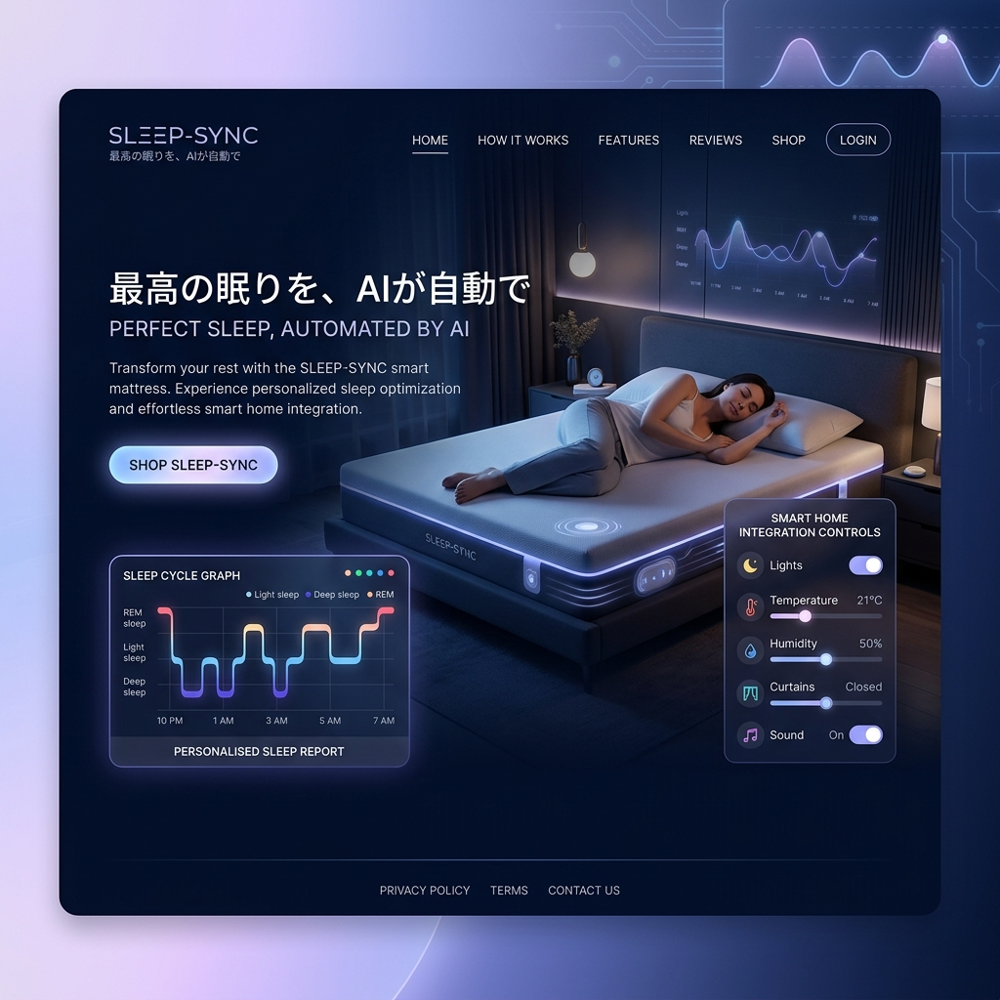

最高の眠りを、
AIが「自動操縦」する。
もう、自分に合うマットレスを探し回る必要はありません。あなたの体型、寝返り、心拍数に合わせて、マットレスの硬さと温度が一晩中リアルタイムに変化し続ける、究極のスマートスリープ体験。

「静的」な寝具の限界
店舗で数分間試して買ったマットレスが、本当に毎日の身体に合っているでしょうか。人間の筋肉の疲労度や体温は毎日異なります。SLEEP-SYNCは、あなたの今日の状態に合わせて「形を変える」動的な寝具です。
一晩中、あなたに合わせて変化するテクノロジー
ダイナミック・コンプレッション
マットレス内に内蔵された数百のエアセルが、寝返りを打つたびに瞬時に圧力を再計算し、理想的な体圧分散を維持します。
デュアル・クライメート制御
入眠時は深部体温を下げるために涼しく、起床時は自然な目覚めのために暖かく。AIが睡眠サイクルに合わせて温度を自動調整。
無拘束バイタルセンシング
身につけるデバイスは不要。シーツの下のピエゾセンサーが、心拍数、呼吸数、睡眠の深さを医療機器レベルの精度で計測します。
スマートホーム連動による「完全な入眠空間」
SLEEP-SYNCは寝具だけにとどまりません。あなたがベッドに入り呼吸が深くなると、AIが部屋の照明を徐々に暗くし、スマートカーテンを閉め、エアコンの温度を睡眠モードに切り替える。空間全体を一つの「睡眠カプセル」にします。
翌朝届く、あなた専属の睡眠レポート
毎朝、スマホアプリに昨晩の睡眠スコアと詳細な分析が届きます。「昨日はカフェインの影響で深い睡眠が20分減少しました。今日は就寝前の室温を1度下げてみます」といった、具体的なアクションとAIからの提案が得られます。
Case Study | プロアスリートのリカバリー
トップリーグのサッカー選手が導入。激しいトレーニング後の筋肉の張り（偏った体圧）をAIが自動検知し、腰から脚にかけてのサポートを強化。導入後、リカバリースコアが平均15%向上し、怪我のリスク低減に貢献しています。
睡眠負債からの解放
現代人の多くが抱える「睡眠負債」。私たちはテクノロジーの力で、眠りの「量」だけでなく「質」を極限まで高め、すべての人にクリアな頭脳と活力ある朝を約束します。